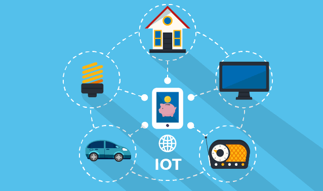
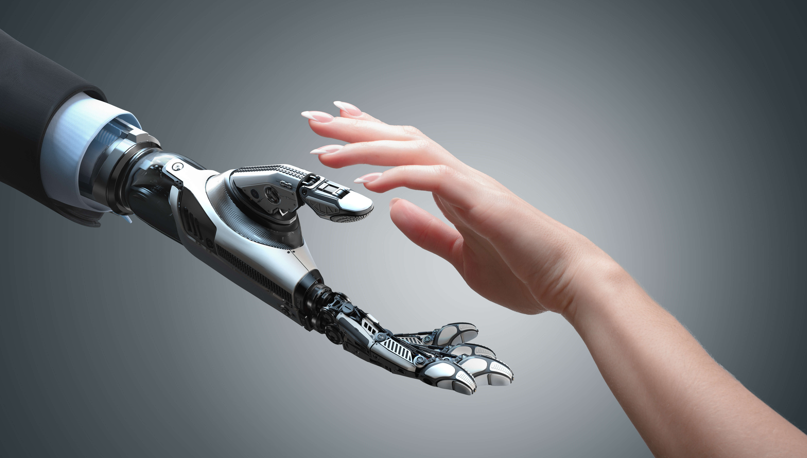
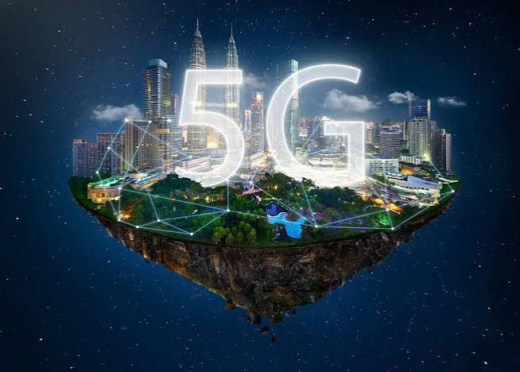

Cada ficha explica una THD, sus aplicaciones en residuos y reciclaje y el producto o servicio que vendemos
gracias a ella.
Índice: IoT · IA y big data · Cobots · Gemelo digital · Nube · 5G · Ciberseguridad · Blockchain · Biotecnología industrial
1. Internet de las Cosas

Definición: conectar objetos físicos con sensores a internet para que envíen datos sin
intervención humana.
Características:
- Sensores de bajo consumo.
- Datos en tiempo real.
- Funciona con baterías durante años.
Aplicaciones en residuos: medir el llenado de contenedores, la temperatura en zonas de
compostaje o el peso en básculas.
Producto/servicio: SensoCiclo: kit de sensores de llenado para contenedores con
panel de control. Precio orientativo: 85 € por sensor + 4 €/mes por contenedor.
Entorno: IT y OT (ambos).
2. Inteligencia artificial y big data
Definición: programas que aprenden de grandes cantidades de datos para reconocer
patrones y tomar decisiones o hacer predicciones.
Características:
- Aprende con ejemplos.
- Analiza imágenes y datos masivos.
- Mejora con el uso.
Aplicaciones en residuos: reconocer el tipo de material en una cinta de selección con
cámaras y predecir cuándo se llenará cada contenedor.
Producto/servicio: VisiónSelect: sistema de cámaras con IA que identifica
plástico, papel, vidrio y metal. Precio orientativo: 38.000 € de instalación + 600 €/mes de
mantenimiento. También RutaÓptima, optimización de rutas de recogida (900 €/mes).
Entorno: IT (rutas, predicción) y OT (cinta de selección): ambos.
3. Robótica colaborativa

Definición: robots diseñados para trabajar junto a las personas de forma segura, sin
jaulas de protección.
Características:
- Se detienen al detectar contacto.
- Fáciles de reprogramar.
- Trabajan 24 horas sin fatiga.
Aplicaciones en residuos: separar piezas en la cinta, un trabajo repetitivo, sucio y con
riesgo de cortes.
Producto/servicio: CobotPick: brazo robótico con pinza guiado por
VisiónSelect, ofrecido en alquiler. Precio orientativo: 2.200 €/mes por brazo.
Entorno: OT.
4. Gemelo digital
Definición: copia virtual de una planta o proceso que se actualiza con datos reales y
permite probar cambios sin riesgo.
Características:
- Se alimenta de sensores.
- Permite simular escenarios.
- Anticipa averías.
Aplicaciones en residuos: simular una nueva línea de clasificación o cambios en el flujo
de camiones antes de invertir.
Producto/servicio: PlantaGemela: modelo virtual de la planta del cliente.
Precio orientativo: 15.000 € por proyecto.
Entorno: ambos.
5. Computación en la nube
Definición: usar servidores de internet, en lugar de equipos propios, para almacenar
datos y ejecutar programas bajo demanda.
Características:
- Pago por uso.
- Escalable.
- Accesible desde cualquier lugar.
Aplicaciones en residuos: centralizar los datos de todas las plantas y vehículos, y
emitir documentos de traslado de residuos de forma digital.
Producto/servicio: CicloCloud: plataforma SaaS con panel de datos, albaranes y
facturación. Precio orientativo: 250 €/mes por empresa.
Entorno: IT.
6. Conectividad 5G

Definición: quinta generación de redes móviles, con más velocidad, menor retardo y
capacidad para muchos dispositivos a la vez.
Características:
- Latencia muy baja.
- Muchos dispositivos conectados.
- Posibilidad de redes privadas en una planta.
Aplicaciones en residuos: conectar cámaras, robots y vehículos de una planta grande sin
cables.
Producto/servicio: Red5G Planta: diseño y puesta en marcha de una red privada
para la planta. Precio orientativo: 12.000 € por instalación.
Entorno: OT, con salida a IT.
7. Ciberseguridad
Definición: medidas para proteger sistemas, redes y datos frente a ataques e
interrupciones.
Características:
- Segmentación de redes.
- Control de accesos.
- Detección de incidentes y copias de seguridad.
Aplicaciones en residuos: proteger los autómatas y robots de la planta y los datos de
clientes y facturación. Un ataque puede parar la recogida de una ciudad.
Producto/servicio: EscudoPlanta: auditoría, segmentación IT/OT y
monitorización. Precio orientativo: 6.500 € de auditoría + 450 €/mes de vigilancia.
Entorno: ambos, con medidas diferentes en cada uno.
8. Blockchain
Definición: registro digital compartido en el que los datos anotados no se pueden
modificar sin que se note.
Características:
- Inalterable.
- Compartido entre varias empresas.
- Auditable.
Aplicaciones en residuos: demostrar el recorrido de un residuo desde su origen hasta su
reciclado, y certificar material reciclado.
Producto/servicio: TrazaCiclo: certificado digital de trazabilidad de lotes.
Precio orientativo: 1,50 € por lote certificado.
Entorno: IT.
9. Biotecnología industrial
Definición: uso de enzimas, bacterias u otros organismos para fabricar o transformar
materiales de forma más limpia.
Características:
- Procesos a baja temperatura.
- Menor uso de productos químicos.
- Todavía en fase de escalado.
Aplicaciones en residuos: descomponer plásticos difíciles de reciclar y convertir
residuos orgánicos en bioplásticos o energía.
Producto/servicio: BioVigía: estudio de viabilidad y vigilancia tecnológica de
procesos enzimáticos para clientes que quieran dar el salto. Precio orientativo: 4.800 € por estudio.
Entorno: OT.
Tabla resumen
Productos y servicios de Ciclo Digital Consultores
| Producto/servicio |
THD implicadas |
Cliente objetivo |
Precio |
| SensoCiclo |
IoT, 5G, nube |
Ayuntamientos y gestores de recogida |
85 € por sensor + 4 €/mes |
| VisiónSelect |
IA, IoT, nube |
Plantas de clasificación |
38.000 € + 600 €/mes |
| RutaÓptima |
IA, IoT, nube |
Empresas de recogida |
900 €/mes |
| CobotPick |
Cobots, IA |
Plantas de clasificación |
2.200 €/mes por brazo |
| PlantaGemela |
Gemelo digital, IoT, IA |
Plantas medianas y grandes |
15.000 € por proyecto |
| CicloCloud |
Nube |
Pymes gestoras de residuos |
250 €/mes |
| Red5G Planta |
5G |
Plantas grandes |
12.000 € por instalación |
| EscudoPlanta |
Ciberseguridad |
Todo tipo de clientes |
6.500 € + 450 €/mes |
| TrazaCiclo |
Blockchain, nube |
Recicladores y marcas que compran reciclado |
1,50 € por lote |
| BioVigía |
Biotecnología industrial |
Recicladores de plásticos y orgánico |
4.800 € por estudio |
Nuestras ofertas combinan varias THD: por ejemplo, VisiónSelect + CobotPick +
EscudoPlanta forman un paquete de «planta de clasificación inteligente y segura». Los precios
son orientativos y ficticios.